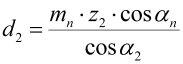
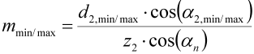
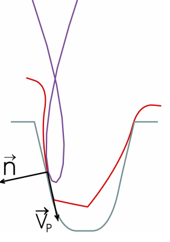

|
|
|


计算基础原理
面齿轮与曲线齿条具有共同特征。然而，与这种简单的齿轮箱不同，在设计面齿轮尺寸时，工程师始终要面对这种弯曲所带来的约束。由于直齿面齿轮中的齿面必须平行于面齿轮的某个半径——相接触的小齿轮具有 平行 于其自身轴线的齿面——相交线定理的直接结果是压力角必须从外到内减小。该方程 [50] 是确定面齿轮几何尺寸的核心公式。此处将其应用于直齿轮轮齿。参见方程 (16.1)。
|  | (16.1) |
其中
| d2 | 面齿轮直径 |
| mn | 小齿轮法向模数 |
| z2 | 面齿轮齿数 |
| αn | 小齿轮分度圆压力角 |
| α2 | 面齿轮在直径 d2 处的压力角 |
例如，您可以由此定义从外径到内径的压力角。如果内侧齿面陡峭，渐开线会较短，只承担齿高的一小部分。朝面齿轮中心方向的根切风险会增大。此处的任何根切都会进一步减小可用区域。结果是一个最小内径和一个最大外径，它们限制了面齿轮的总齿宽。这与锥齿轮副有根本区别。一对锥齿轮由于其齿宽增加而能够传递更高的扭矩。面齿轮在这方面受到限制。然而，如果您选择正确的轴向偏移 bv，即通过将齿宽中部 b/2 相对于分度圆 dPm 移动，您可以优化最大允许齿宽。
在设计面齿轮尺寸时，最好先定义一个最小和一个最大压力角，然后再确定可实现的内径和外径。如果外部条件限制了该直径（这通常影响外径），您可以使用方程 (16.1) 中的换算来改变模数可用的范围。
|  | (16.2) |
除了单纯的数字之外，查看轮齿的图形化展示可能会对您有所帮助。
绝大多数应用使用带直齿轮的面齿轮。然而，带有斜齿的面齿轮在尺寸设计正确时，确实能提供与降噪和强度相关的诸多益处。遗憾的是，这些益处被齿面不对称的问题所抵消，即左齿面不再与右齿面匹配。实际上，这意味着发生的任何根切会在一侧齿面上比另一侧更早出现。这些齿面差异还对强度有显著影响，从而在不同旋转方向之间产生可传递功率的差异。然而，如果只使用一个旋转方向（如电动工具的情况），您可以优化所涉及的齿面，而无需考虑对非工作齿面的影响。
经验表明，用渐开线函数、直线和圆弧来描述齿形的理论几何考虑迟早会达到其极限。经过实践检验且更为可靠的是基于啮合过程模拟，或更好的是基于制造过程模拟的齿形计算。此处，跟踪刀具作用面上一点的轨迹，直到其垂直于刀具表面的速度达到过零点（参见图 17.1）。

图 17.1：插齿刀型刀具（红色）在面齿轮（绿色）上的轨迹曲线（蓝色）
这些位置是齿形表面上的潜在点。表面上的实际点随后必须与"假想"点区分开来，在假想点处，尽管法向速度也消失了，但其余点仍被标记为位于材料之外。此处所述过程中最困难的方面之一是如何将真实点与假想点区分开。 除了引用用于对平面中的点进行分类的常用标准算法之外，您还必须使用经验方法，这些方法利用齿形的已知属性，以确保获得具有足够安全性的定义良好的齿形。这使您能够将计算面齿轮 3D 齿形所得的数据与使用经典制造方法通过插齿刀展成所得的数据相匹配。通过以 IGES、STEP 或 SAT 格式输出 3D 实体，您可以在任何 CAD 系统中设计该形状。面齿轮可以通过注塑成型、烧结或精密锻造工艺制造。然而，如果您想检查面齿轮是否存在根切或齿顶尖点，2D 横截面视图更为合适。它同时显示面齿轮齿形的内侧、中部和外侧。如果您逐步旋转齿轮，可以非常准确地检查齿轮展成的每个方面。如果齿顶变尖，或者啮合比不够好，您必须像处理准双曲面齿轮那样降低齿高。为了降低齿轮对轴线对中或中心距误差的敏感性，您可以允许在齿面上进行齿线修形（齿线方向）。对于面齿轮，您可以通过使用在制造过程中比小齿轮多一个或多个齿的插齿刀来相当容易地生成这种修形 [3]。当您比较齿形时，可以看到插齿刀上增加的齿数对生成的齿形的影响。然而，如果面齿轮具有较大的轴向偏移 bv，修形可能会偏向一侧！在通过圆柱齿轮的每个轴向截面中，面齿轮齿轮单元都对应于小齿轮-齿条齿轮单元。以齿条理论为基础，您因此可以定义每个截面中的压力角、接触线和重合度。
本节示例基于文献 [51] 的出版物。
Underlying principles of calculation
A face gear has common features with a curved rack. However, unlike this simple gearbox, when sizing a face gear, engineers are always confronted with the constraints imposed by that very bending. As the tooth flank in a straight-toothed face gear must run parallel to one radius of the face gear - the contacting pinion has flanks parallel to its own axis - the immediate result of the theorem of intersecting lines is that the pressure angle must reduce from outside to inside. This equation [50] is the central formula for sizing the geometry of face gears. Here it is applied for spur gear teeth. See equation (16.1).
| (16.1) |
with
| d2 | diameter of face gear |
| mn | normal module pinion |
| z2 | number of teeth on face gear |
| αn | pinion pressure angle on the reference circle |
| α2 | pressure angle on face gear for diameter d2 |
From this, you can, for example, define the pressure angle from the external diameter to the internal diameter. If the inside tooth flanks are steep, the involute will be short and only bear a small part of the tooth height. The risk of an undercut in the direction of the crown gear center grows. Any undercut here would further reduce the usable area. The result is a minimum internal diameter and a maximum external diameter, which limit the total facewidth of the face gear. This is a fundamental difference to the bevel gear set. A pair of bevel gears can transmit higher torques because of its increased facewidth. Face gears are limited in this respect. However, if you select the right axial offset bv, i.e. by moving the facewidth middle b/2 relative to the reference circle dPm, you can optimize the maximum permitted facewidth.
When sizing a face gear, it is a good idea to define a minimum and a maximum pressure angle and then the achievable internal and external diameter. If external conditions limit this diameter (this usually affects the external diameter), you can use the conversion in equation (16.1) to change the range available for the module.
| (16.2) |
In addition to the bare numbers, you may find it helpful to look at a graphical presentation of the teeth.
The vast majority of applications use face gears with spur gears. However, face gears with helical teeth, when sized correctly, do offer a number of benefits related to noise reduction and strength. Unfortunately, these benefits are offset by the problem that the tooth flanks are not symmetrical, i.e. the left flank no longer matches the right flank. In practice, this means that any undercut that occurs will happen earlier on one flank than on the other. These flank differences also have a significant influence on strength, which results in a difference in the transmittable power between the directions of rotation. However, if only one sense of rotation is used, (as is the case for power tools), you can optimize the flank involved without taking into account the effect on the non-working flank.
Experience has shown that theoretical geometry considerations that describe the tooth form with involute functions, lines and arcs of circle, will sooner or later reach their limit. Tried and tested, and much more reliable, are tooth form calculations which are based upon the simulation of the meshing process, or, even better of the manufacturing process. Here, the trajectory of a point on the active surface of the tool is followed until its velocity normal to the tool surface reaches a zero crossing (see Figure 17.1).
Figure 17.1: Spur curve (blue) of the pinion type cutter tool (red) on the face gear (green)
These places are potential points on the tooth form surface. The actual points on the surface must then be identified separately from the “imaginary” points at which, although the normal speed also disappears, the remaining points are also marked as being outside of the material. One of the most difficult aspects of the procedure described here is how to separate the real points from the imaginary points. In addition to referring to the usual standard algorithms for classifying points in a level, you must also use empirical approaches that use the known properties of the tooth form to be sure of achieving a well-defined tooth form with sufficient safety. This enables you to match the data derived from calculating a 3D tooth form for a face gear with the data derived from generating with a pinion type cutter, using a classic manufacturing method. By outputting the 3D body in IGES, STEP or SAT format, you can design the form in any CAD system. The face gears can be manufactured in an injection molding, sintered or precision forging process. However, 2D cross section view is much more suitable if you want to check a face gear for undercut or pointed tooth tip. This displays the inside, middle and outside of the face gear tooth form all at the same time. If you rotate the gears step by step, you can check every aspect of gear generation very accurately. If a tooth is pointed, or if the meshing ratios are not good enough, you must reduce the tooth height in the same way as you do for hypoid gears. To reduce the gear’s sensitivity to errors in the axis alignment or the center distance, you can permit flank line crowning on the tooth flank (flank line). You can generate this quite easily for face gears by using a pinion type cutter that has one or more teeth more than the pinion in the manufacturing process [3]. When you compare the tooth forms, you can see the effect that the increased number of teeth on the pinion type cutter had on the generated tooth form. However, if the face gear has a large axial offset bv, the crowning can shift to one side! In every axial section through the cylindrical gear, the face gear gear unit corresponds to a pinion-rack gear unit. Using the rack theory as a basis, you can therefore define the pressure angle, contact lines and contact ratio in each section.
The examples in this section are based on the publication in [51].